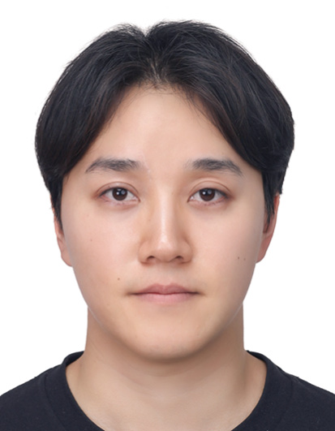
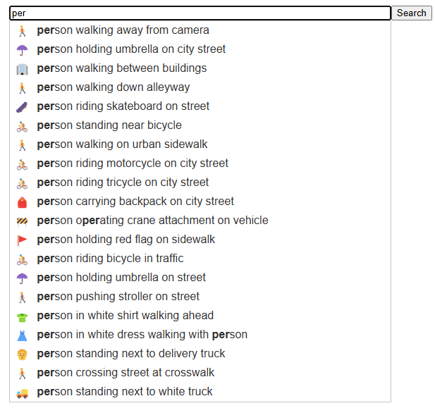
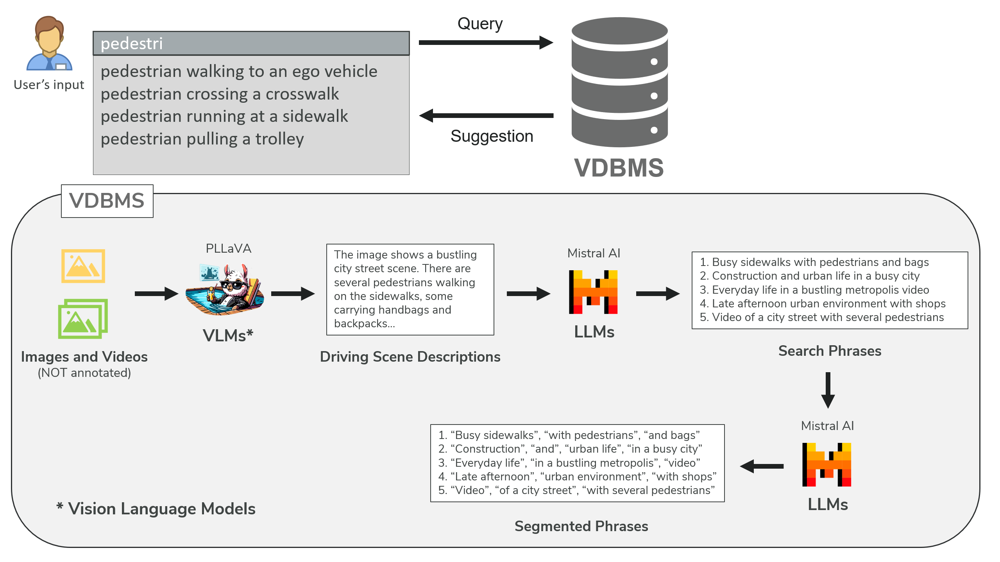
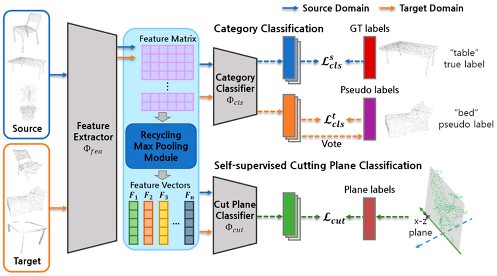
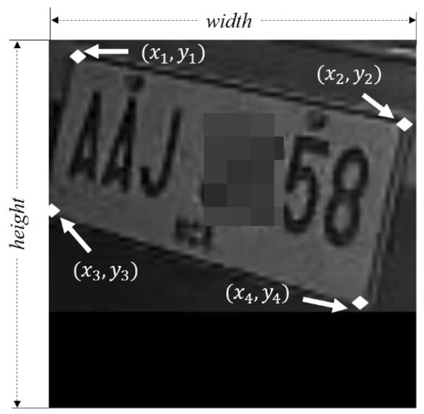
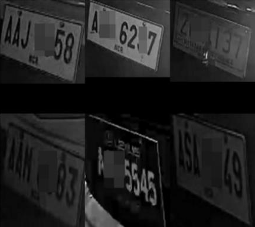

|
Hojin Yoo I'm a second-year Master's student at The Ohio State University fortunately advised by Arnab Nandi. I'm broadly interested in multimodal data management, human-computer interaction, foundation model, and computer vision. Previously, I received my M.E. and B.E. degrees from Incheon National University with Kyungkoo Jun. |
 |
{kind=link}
News |
- 11/2024: I'll start as a PhD student at OSU in Spring 2025!
- 05/2024: One paper on autocompletion for video query accepted to HILDA 2024.
- 01/2024: Joined the Interactive Data Systems Lab under Arnab Nandi at OSU starting SP24.
- 08/2023: Started my journey as a Master’s student in Computer Science and Engineering at OSU.
Research |
|

|
Emojis in Autocompletion: Enhancing Video Search with Visual Query Suggestions
Hojin Yoo, Arnab Nandi demo Integrating emojis into autocompletion enhances video search by visually representing search phrases, leveraging Large Language Models to reduce user effort in query formulation. |
|

|
Guided Querying over Videos using Autocompletion Suggestions
Hojin Yoo, Arnab Nandi HILDA, 2024 paper / project page An innovative approach to constructing video search autocompletion: generating suggestions by leveraging Vision Language Models for more intuitive querying. |
|

|
Point Cloud Classification by Domain Adaptation Using Recycling Max Pooling and Cutting Plane Identification
Hojin Yoo, Kyungkoo Jun Sensors, 2023 paper Leveraging recycling max pooling and cutting plane identification enables the domain adaptation model to improve point cloud classification accuracy. |
|

|
Deep corner prediction to rectify tilted license plate images
Hojin Yoo, Kyungkoo Jun Multimedia Systems, 2021 paper Deep learning models can be trained to predict the four corners of tilted license plates, enabling efficient image rectification and improved recognition. |
|

|
Deep Homography for License Plate Detection
Hojin Yoo, Kyungkoo Jun Information, 2020 paper Predicting four corners of tilted license plates enables deep homography models to rectify plates and improve recognition accuracy. |
|
Template inspired from John Barron. This page has been visited |